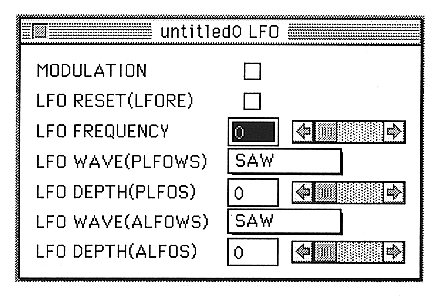

MODULATION
Turns the hard LFO bit on and off.
LFO RESET (LFORE)
The LFO is reset every time a note is turned on.
LFO FREQUENCY (LFOF)
Sets the oscillation frequency of the LFO.
You can set a value from 0 to 31.
LFO WAVE(PLFOWS)
Sets the shape of the PLFO waveform.
SAW, SQUARE, TRIANGLE, NOISE can be set.
LFO DEPTH(PLFOS)
Sets how much the LFO affects the pitch.
You can set a value between 0 and 7.
LFO WAVE(ALFOWS)
Set the shape of the ALFO waveform.
SAW, SQUARE, TRIANGLE, NOISE can be set.
LFO DEPTH(ALFOS)
Sets the degree of mixing of the LFO to the EG.
You can set a value between 0 and 7.